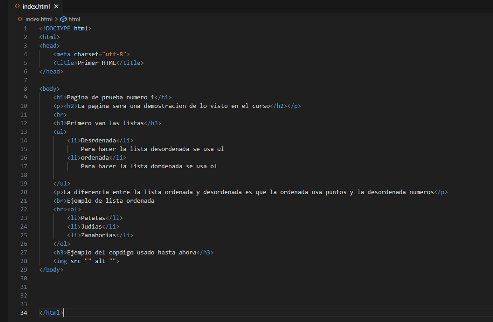
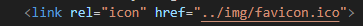
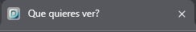

Aqui van las listas
- Desordenada
Para hacer la lista desordenada se usa ul
- ordenada
Para hacer la lista dordenada se usa ol
La diferencia entre la lista ordenada y desordenada es que la ordenada usa puntos y la desordenada numeros
Ejemplo de lista ordenada
- Patatas
- Judias
- Zanahorias
Ejemplo del copdigo usado hasta ahora

Explicacion de como poner una imagen
Para poner la imagen usaremos "img" el cual nos dara 2 opciones de base:
src
alt
Aparte de estas dos opciones basicas tenemos muchas mas opciones, una de las mas utiles es "width" el cual nos permite modificar el tamaño de nuestra imagen
Para añadir un logo a la pestaña de la pagina web el metodo mas sencillo es el siguiente:
- Crea o escoge una imagen para usar de logo.
- Utiliza una herramienta como realfavicongenerator para generar una imagen
con el tamaño adecuado, es importante que el logo este en .ico.
- Añade este codigo al "head" de tu codigo html:

El resultado final es el siguiente:
